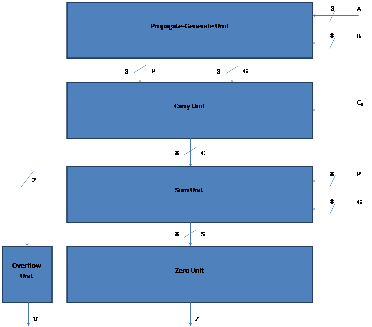

High-Speed 8-bit Carry Look-Ahead Adder with Zero and Overflow
Navigation
Home
Abstract
Top-Level Block Diagram
Sub-Cells
Design Strategy
Table of Completion
Quantitative Performance Results
Conclusions
Schematics/Layouts
Lab #3: Part II
Block Diagram
